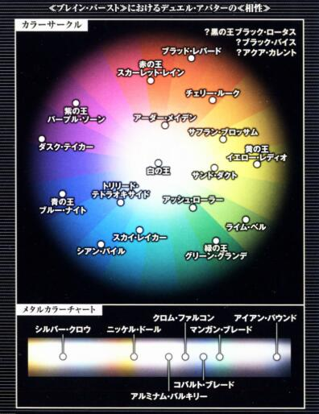

神经连结装置 科技本质 500分
一个体积0（如开放硬度为3），装备在颈部的量子接续通讯终端装置（大小形状如同颈圈的C字型机械造物）。能够连线到全球网络，和脑细胞进行量子规模的无线通讯，能传送假想的感觉情报到脑部，同时也能消除现实的各种感觉。
此外还有两种连线方式，有线直连通信 两人透过XSB线连结通信，而非使用无线方式与所在的网络服务器进行相互通信。在有线直连的情况下，防护墙的九成都将失去作用，所以直连一般只限亲人或恋人。直连的两人可不必开口，直接透过连接终端进行思考对话； 无线联机（AD HOC CONNECTION） 能让多具神经连结装置不透过伺服器，直接以无线电波联机，然而在连接速度与安全性方面都不如有线直连，因此基本上没有人使用。
神经连结装置在各方面的效果上等同一部电脑及智能通讯设备。由於其操作的便利性，打破了人脑思想与电子数据的隔膜，所以能使使用者如同生理技能般在无受训下使用电脑技能进行检定，亦无需因此失去一个成功数（但不视为持有1级电脑技能）。除此之外，使用者在进行电脑检定获得+1DP器械加值。本装置使用太阳能充电，在缺乏光线的环境下最多以低出力，保持基本功能续行72小时（例如这时你用来打撸啊撸一定不够你撸72小时），以支援意外灾祸的搜救工作。另外还有脑讯息认证系统，认证后除非重置所有资料，否则无法交易使用。
Burst Linker 科技本质
不论是凡人还是英雄，庸才还是精英，人心总共有着烦恼、恐怖、欲望、自卑感等负面的情绪。懦弱的人或逃避着它们，或放纵着它们；只有真正内心的坚强才会面对它，跨越它。
本血统源自於轻小说《加速世界》中，指的是一款名为《Brain Burst 2039》的游戏中的玩家。游戏是神经连结装置的应用程式，软体的制作者不明，能在以现实世界为蓝本重新构筑的虚拟世界中以加速的方式进行对战的格斗游戏。要成功安装需要满足两个条件，第一个条件是从出生起就经常配戴着神经连结装置，因此年纪最大的超频连线者也不过16岁，第二个条件是大脑反应速度。可以说是未来世代的人类专属血统。而由於游戏本身并无力量，故主神取其核心的理念，通过后未来的量子力学科技，实现出通过人为意志与观测去改变事象的异能。
Brain Burst 存在一种名为『心意系统』的特殊系统，能使用强烈的意志干涉游戏世界的数据演算，形成空想具现的效果。Burst Linker血统是主神参照此系统的核心程序并改写，使其能刺激和强化血统持有者的意志力，然后以此意志力改写现实的事象，变化成对战虚拟角色并使用虚拟角色的能力。
由於核心是能改写一切的『心意系统』，游戏本身内置的等级并无意义，故血统等级的划分改为Rank.I至Rank.V。而对战虚拟角色所擅长的领域范围依然按颜色分类：
颜色 特色
红 远程攻击
蓝 近距攻击
黄 间接攻击
紫 中距攻击
绿 防守
橙 远程间接
黑 吸收
白 偏转
金属 异常免疫
*中间色：你可以选择在色盘上介於以上颜色之间的中间色作为你的对战虚拟角色颜色，如此选择可使你的角色同时视为最多三个邻接色系，但如此选择会令你必须选择对应色系各自强化最少当前血统支线等级（D1C2B3A4）次（例如你的紫色对战虚拟角色可同时点取红、蓝、紫三色的强化，但升到C级需三色的强化各自最少点取1项；而升到B级则是各自最少2项），你必须在第一次购买血统时决定你是否采用中间色，同时中间色的专属色系依旧只有一个。

【对战虚拟角色】
Brain Burst的对战使用的虚拟角色，玩家在游戏安装后第一晚的噩梦中，程式进入玩家的深层意识，以玩家的恐怖、欲望、自卑感等塑造出对战虚拟角色，对战虚拟角色是在噩梦中玩家保护自己的心念产生的。
游戏的角色依特性会有机械、生物、流体等各种不同的形态的外型和装甲。你可以把内心的伤痕按照颜色塑造成【对战虚拟角色】，并获得【颜色名】＋【固有名】的【角色名字】（例如白银之鸦）。色名除了代表对战虚拟角色的颜色，也同时决定了对战虚拟角色能力的倾向，固有名则描述对战虚拟角色的形象。一般色系的角色较常见，金属色系的角色较少。【对战虚拟角色】的外形和名字一经选择后便不可改变。
在【对战虚拟角色】型态下，你的装备会自动变化外观以适应你的角色外型，但其体积、伤害、防御等数据不会有变化。
而在你每次获得或提升血统等级后，将获得一定数量的升级点数。你可以利用这些升级点数点取【对战虚拟角色强化树】内对应你的【对战虚拟角色】颜色或共通的强化项目，如需判别加值类型，强化项目视为增强加值。这些升级点数在你每次获得新的升级点数后，第一次回到主神空间（包括於主神空间内强化）时自动重置仅一次。
Rank.I D+600
本强化必须持有神经连结装置，当神经连结装置（体积0，硬度3）被破坏时，无法使用描述内带有【思考加速状态】或【对战虚拟角色】关键字的能力。
【反应的天赋】
长期与电子讯号的交感，你大脑反应速度异於常人。获得C级免疫措手不及。
【思考的加速】
你能在任何时候以自由动作喊出『超频连线（バースト?リンク，Burst Link）』的指令，在Brain Burst程式的作用下进入【思考加速状态】。【思考加速状态】下，如有足够的电子参考资料进行查询，你在一次智力检定上获得+1的器械加值；另外你能利用【思考加速状态】下充裕的时间考虑行动，故亦可改为在敏捷检定上获得+1的洞察加值。而在战斗开始时，你能使用这能力使你先攻检定+2洞察加值。
【显现的心痕】
你能以自由动作消耗1意志，在【思考加速状态】下不进行技能检定，改为控制程式选单，解除思考加速状态并变身成【对战虚拟角色】，持续一场景。在此等级，你的【对战虚拟角色】可配置的升级点数为4点。你必须选择最少1项你的色系专属强化项目。
Rank.II C+1200
本强化必须持有神经连结装置，当神经连结装置（体积0，硬度3）被破坏时，无法使用描述内带有【思考加速状态】或【对战虚拟角色】关键字的能力。
【加速的天赋】
你已经习惯在任何意外状况下迅速进入【思考加速状态】。你D级获得的免疫措手不及能力提升为B级，并获得1级【警觉】专长。
【心痕的认知】
通过观察【对战虚拟角色】的外型，你开始了解到自己内心的渴求和伤痕，这如同一道枷锁一般束缚你——也锻炼着你。现在你变身成【对战虚拟角色】仍需消耗1点意志，你的【对战虚拟角色】可配置的升级点数由4点提升为8点。你必须选择最少2项你的色系专属强化项目（含升级）。
特别标注：如果强化本等级血统后，不具有2项你的色系专属强化项目，这个血统等级的所有效果将被无效，包括提供的升级点数，但是你依然可以分配点数，当你满足条件后血统生效。
Rank.III B+2400
本强化必须持有神经连结装置，当神经连结装置（体积0，硬度3）被破坏时，无法使用描述内带有【对战虚拟角色】关键字的能力，而【思考加速状态】能力由於你长期与电子讯号的交感，已经可以在失去程式辅助下以个人意志进入——或许说，你已经用大脑代替电脑记下部分程序的内容并在脑内运行。
【锐化的意识】
长期与电子讯号的交感，你的潜意识对於情报的处理更为敏感，并在危机迫近时给予你警示。你的免疫措手不及能力提升为A级，并获得【精通先攻】专长。
【时光的沉淀】
你由於【思考加速状态】，精神上所渡过的时光早已超过你肉体年龄，因此你比同龄人显得更为老成和智慧，你亦更能善用【思考加速状态】的『作弊能力』。你现在进入【思考加速状态】时，智力检定上获得的器械加值和敏捷检定上获得的洞察加值改为每血统等级1点（AA级视为5），而先攻检定则改为每血统等级2点（AA级视为5x2=10）。
【心痕的认知】
通过观察【对战虚拟角色】的外型，你开始了解到自己内心的渴求和伤痕，这如同一道枷锁一般束缚你——也锻炼着你。此能力将永久占用你3点意志上限，但变身时无需再消耗意志，你的【对战虚拟角色】可配置的升级点数由8点提升为16点。你必须选择最少3项你的色系专属强化项目（含升级）。
特别标注：如果强化本等级血统后，不具有3项你的色系专属强化项目，这个血统等级的所有效果将被无效，包括提供的升级点数，但是你依然可以分配点数，当你满足条件后血统生效。
Rank.VI A+4800
本强化已无须持有神经连结装置，你已经能通过个人的意志变成为【对战虚拟角色】，并且常态保持【思考加速状态】。
【相对的时间】
长期与电子讯号的交感，似乎已经令你接触到时间的边界。在你体感的世界中，你的时间长度似乎与他人相差近一倍。 你的免疫措手不及能力提升为S级，并获得一个额外的移动动作（仅可用作移动）和一个额外的标准动作（仅可基础规则中允许的行为）。
【统一的情报】
你Brain Burst的程式对於你已经失去了实际意义，只馀下一个形式。你现在进入【思考加速状态】无需再通过指令。而你的大脑已经进化成更快速地处理情报的器官，世间一切知识对你进化后的大脑而言再无界别。
选择你的学识技能中某个专业，你在学识技能下其余的所有专业合并为该专业，等级取你所有学识技能下所有专业等级之和的八分之一，然后再提升3级。你以该专业进行学识技能的所有检定。
【创伤的升华】
你已经把自己内心的渴求和伤痕升华成你生活的推进力，於你而言它再不仅是一道创伤，更是你现今作为人之存在的意志体现。或许没有人能够给你带来救续，但你至少可以成为自己的英雄。
现在你变身成【对战虚拟角色】无需再消耗意志，但此能力将永久占用你3点意志上限，你的【对战虚拟角色】可配置的升级点数由16点提升为30点。你必须选择最少4项你的色系专属强化项目（含升级）。
特别标注：如果强化本等级血统后，不具有4项你的色系专属强化项目，这个血统等级的所有效果将被无效，包括提供的升级点数，但是你依然可以分配点数，当你满足条件后血统生效。
Rank.V AA+7200
本强化已无须持有神经连结装置，你已经常态保持【思考加速状态】，你的【对战虚拟角色】已经和你本身再度融为一体。你已认识自我所在，再进一步或许便可如同修仙文明般斩尸成圣，但身处科技文明的你更明白何解人以为人，所以你保留着自身的人性的懦弱与光辉，拒绝成仙成圣。
【超越的意志】（突破天际的钻头(X)）
人之所以为人，就因为它的弱小，因为弱小，所以他们才需要勇气去挑战强大。甘心为凡人的你放弃了成仙成圣的可能，选择珍惜自己的弱小，即使混身泥泞，即使因为依据外物而被轻屑，你也不愿意放弃掉人类的软弱——以及随之而来的勇气。
你的意志已经超越了Brain Burst的程式对於你设下的极限——亦是你第一次载入Brain Burst想像【对战虚拟角色】时自己对自己设下的极限。
当你上一轮在同一个动作消耗过意志值来获得表现加值，你在本轮中可在同一个动作多消耗1点意志值来获得额外的获得表现加值（例如第二轮消耗2点获得+6DP表现加值，第三轮消耗3点获得+9DP表现加值，第四轮消耗4点获得+12DP表现加值，如此类推）。你每次以此能力消耗意志，获得等同你累积轮数-1的额外表现加值（即第二轮额外+1，第三轮额外+2，第四轮额外+3，如此类推），如你持有钢铁意志(2)专长，本能力则改为获得等同你累积轮数-1后乘4的额外表现加值（即第二轮额外+2，第三轮额外+3，第四轮额外+4，如此类推）。
【神圣的伤痕】
你的【对战虚拟角色】已经化作一道纹身般的伤痕刻印在你身体的某处（你所自定），伤痕的颜色为你的【对战虚拟角色】属性颜色，而图像则受你的【对战虚拟角色】固有名（心灵创伤）影响。你现在依然能变身成【对战虚拟角色】，但除了伪装成超人外并无实际意义。因为所有强化项目已经与这道【神圣的伤痕】一同化作你存在的一部分。【神圣的伤痕】将永久占用你3点意志上限。
此能力将永久占用你3点意志上限，现在你能分配的升级点数为80点。
【心意的奥秘】
你的意志现在能一定程度上在量子层面上改写事象，消耗【相对的时间】所获得的额外动作，你能自选获得一个价格不高於1个A级特性或无视前置条件（但仍需承受其负面限制）获得一项总价值不高於2个B级特性的强化（例如一个B级技艺），持续一个场景。你所选的特性或强化无论原本本质为何，在此情况下视为科技本质，因为你只是模仿其能力而非真正获得它。
【传承的意志】
在原作《加速世界》中，Brain Burst是一脉单传地散播开来的游戏，上辈与下辈有着如同家长子女一般的羁绊。在感悟到人之所以为人的意义和意志后，你洞悉到主神空间版的Brain Burst其实也是之前某人的传承的意志，亦发现他希望你如同小说中的设定般，小心地把火种传承下去。
本能力使你能以自身的意志制作一个世界内唯一一个的Brain Burst系统。你能把它寄存於任意量子设备中（包括你已不需要使用的神经连结装置）。当你把此量子设备交予某人，并使其个人认证绑定后，他立即视为强化了D级Burst Linker血统（会正常和其他血统强化冲突），并能在支付7XP后升级为C级血统版本，再支付22XP后则可升级为B级血统版本，其后必须正常购买、强化或自创。
这个Brain Burst系统每个世界也是唯一一个的，这意味着你可以选择不把这可有可无的强化交予队友，而是在前往不同的影片世界中，把这个系统传承给当中你看中的影片人物，在无限的世界中传承着人类的意志。
如你把此系统寄存在你的神经连结装置中并交予影片世界中的人物，你将在回到主神空间时获得一个全新的神经连结装置。这是当初给你留下传承的某人小小的心意，帮助你把新的传承传得更广更远。
特别标注：如果强化本等级血统后，不具有5项你的色系专属强化项目，这个血统等级的所有效果将被无效，包括提供的升级点数，但是你依然可以分配点数，当你满足条件后血统生效。
对战虚拟角色强化树：
Brain Burst的对战使用的【对战虚拟角色】所持有的特殊能力，使用者能在对战虚拟角色升级时通过分配升级点数来获得强化项目，或是消费对应的支线等级和点数购买（亦可按自创技能规则以XP代替支付）。通过升级获得时，角色不会重覆获得属性点（购买血统时已获得）；而消费支线和点数购买时则会正常获得属性点，但获得的属性点不会在升级血统时重置，但可以在升级血统时重置消费支线和点数购买的强化项目（这可视为你以支线和点数购买了额外的升级点数，因此此重置不会退回支线和点数，亦不会重置或增减购买技艺时获得的属性点）。在血统达AA级前，你无法在变身成【对战虚拟角色】前应用任何对战虚拟角色强化。
所有Rank.V的强化项目无法通过升级点数获得，只能通过支线及点数（或对应的XP）购买。由於Rank.V的强化项目前提前AA级的血统等级，因此无法在升级血统时重置（AA级亦是本血统最高的血统等级），但相对地可正常获得属性点。
可选规则：在不开发支线合成的情况下，通过合成获得高级的共通强化项目，并不会提升角色的属性上限。
共通：
强化外装·武器/防具/载具
前置条件：D级Burst Linker
价格：D+500 / 4点升级点数
效果：可重复选择，每次选择可获得一件科技本质的武器/防具/载具，连同附上模版，总兑换价值不可高於500点。这件强化外装会在你变身成【对战虚拟角色】时才一同具现出来，或当你血统达A级时化作实物。当你使用自身的强化外装·武器或载具进行攻击时，获得+1DP的器械加值，而强化外装·防具则改为获得+1甲防。
特殊：你能选择一把你已有的武器/防具/载具，转化为强化外装，能在变身成【对战虚拟角色】时应用投资在此强化外装上的强化改造。这样你能在升级时重置在其身上的投资的点数，但相对地你除非在升级重置时解除物品与本能力之间连结，否则你在血统达A级前无法在变身前拿出此物品。然而，你无法把生物载具、智能或生物武器和防具转化为强化外装。
说明：你的意志化作武器、防具或载具，在你显示自我时伴随你的身旁。
破甲锋锐-N
前置条件：强化外装·武器/强化外装·载具（需指定载具上一件武器）
价格：D+500 / 4点升级点数
效果：可使一件符合条件的强化外装，你使用它时破甲提升3点增强加值。
特殊：可重复选择或购买，但需额外支付一个D级支线。重复选择后此技能会合成为破甲锋锐-R（重置后算作8点升级点数）。
说明：通过与【对战虚拟角色】的连接，利用想像暂时改变由你的意志具现化之武器的形状和材质，提升其破甲能力。
破甲锋锐-R
前置条件：强化外装·武器/强化外装·载具（需指定载具上一件武器）
价格：C+1000 / 8点升级点数
效果：可使一件符合条件的强化外装，你使用它时破甲提升7点增强加值。
特殊：可重复选择或购买，但需额外支付一个C级支线。重复选择后此技能会合成为破甲锋锐-SR（重置后算作16点升级点数）。
说明：通过与【对战虚拟角色】的连接，利用想像暂时改变由你的意志具现化之武器的形状和材质，提升其破甲能力。
破甲锋锐-SR
前置条件：强化外装·武器/强化外装·载具（需指定载具上一件武器）
价格：B+2000 / 16点升级点数
效果：可使一件符合条件的强化外装，你使用它时破甲提升15点增强加值。
说明：通过与【对战虚拟角色】的连接，利用想像暂时改变由你的意志具现化之武器的形状和材质，提升其破甲能力。
中和力场-N
前置条件：强化外装·武器/强化外装·载具（需指定载具上一件武器）
价格：D+500 / 4点升级点数
效果：可使一件符合条件的强化外装，你使用它时破魔提升3点增强加值。
特殊：可重复选择或购买，但需额外支付一个D级支线。重复选择后此技能会合成为中和力场-R（重置后算作8点升级点数）。
说明：通过与【对战虚拟角色】的连接，把特定频率的意志力包裹着由你的意志具现化之武器，在接触时中和目标表面上的异能。
中和力场-R
前置条件：强化外装·武器/强化外装·载具（需指定载具上一件武器）
价格：C+1000 / 8点升级点数
效果：可使一件符合条件的强化外装，你使用它时破魔提升7点增强加值。
特殊：可重复选择或购买，但需额外支付一个C级支线。重复选择后此技能会合成为中和力场-SR（重置后算作16点升级点数）。
说明：通过与【对战虚拟角色】的连接，把特定频率的意志力包裹着由你的意志具现化之武器，在接触时中和目标表面上的异能。
中和力场-SR
前置条件：强化外装·武器/强化外装·载具（需指定载具上一件武器）
价格：B+2000 / 16点升级点数
效果：可使一件符合条件的强化外装，你使用它时破魔提升15点增强加值。
说明：通过与【对战虚拟角色】的连接，把特定频率的意志力包裹着由你的意志具现化之武器，在接触时中和目标表面上的异能。
狂野改装-N
前置条件：强化外装·武器/强化外装·载具（需指定载具上一件武器）
价格：D+500 / 4点升级点数
效果：可使一件符合条件的强化外装，你使用它时威猛提升3点增强加值。
特殊：可重复选择或购买，但需额外支付一个D级支线。重复选择后此技能会合成为狂野改装-R（重置后算作8点升级点数）。
说明：通过与【对战虚拟角色】的连接，利用想像暂时改变由你的意志具现化之武器的体积和材质，使其更为威猛。
狂野改装-R
前置条件：强化外装·武器/强化外装·载具（需指定载具上一件武器）
价格：C+1000 / 8点升级点数
效果：可使一件符合条件的强化外装，你使用它时威猛提升7点增强加值。
特殊：可重复选择或购买，但需额外支付一个C级支线。重复选择后此技能会合成为狂野改装-SR（重置后算作16点升级点数）。
说明：通过与【对战虚拟角色】的连接，利用想像暂时改变由你的意志具现化之武器的体积和材质，使其更为威猛。
狂野改装-SR
前置条件：强化外装·武器/强化外装·载具（需指定载具上一件武器）
价格：B+2000 / 16点升级点数
效果：可使一件符合条件的强化外装，你使用它时威猛提升15点增强加值。
说明：通过与【对战虚拟角色】的连接，利用想像暂时改变由你的意志具现化之武器的体积和材质，使其更为威猛。
碳纤维相转移装甲-N
前置条件：强化外装·防具/强化外装·载具
价格：D+500 / 4点升级点数
效果：可使一件符合条件的强化外装，你使用它时获得【防弹】及【防能量武器】特性，并使盔甲防御提升1点增强加值。
特殊：可重复选择或购买，但需额外支付一个D级支线。重复选择后此技能会合成为碳纤维相转移装甲-R（重置后算作8点升级点数）。
说明：强化改良装甲的结构和材质，以碳纤维防弹，相转移涂漆抵御能量，同时提升硬度。
碳纤维相转移装甲-R
前置条件：强化外装·武器/强化外装·载具（需指定载具上一件武器）
价格：C+1000 / 8点升级点数
效果：可使一件符合条件的强化外装，你使用它时获得【防弹】及【防能量武器】特性，并使盔甲防御提升5点增强加值。
特殊：可重复选择或购买，但需额外支付一个C级支线。重复选择后此技能会合成为碳纤维相转移装甲-SR（重置后算作16点升级点数）。
说明：强化改良装甲的结构和材质，以碳纤维防弹，相转移涂漆抵御能量，同时提升硬度。
碳纤维相转移装甲-SR
前置条件：强化外装·武器/强化外装·载具（需指定载具上一件武器）
价格：B+2000 / 16点升级点数
效果：可使一件符合条件的强化外装，你使用它时获得【防弹】及【防能量武器】特性，并使盔甲防御提升13点增强加值。
说明：强化改良装甲的结构和材质，以碳纤维防弹，相转移涂漆抵御能量，同时提升硬度。
意念引擎-N
前置条件：强化外装·载具
价格：D+500 / 4点升级点数
效果：可使你使用所强化的载具时，其基本速度+15米。
特殊：可重复选择或购买，但需额外支付一个D级支线。重复选择后此技能会合成为意念引擎-R（重置后算作8点升级点数）。
说明：通过与【对战虚拟角色】的连接，以意志力为助燃剂强化其引擎动力，提升其速度。
意念引擎-R
前置条件：强化外装·武器/强化外装·载具（需指定载具上一件武器）
价格：C+1000 / 8点升级点数
效果：可使你使用所强化的载具时，其基本速度+30米。
特殊：可重复选择或购买，但需额外支付一个C级支线。重复选择后此技能会合成为意念引擎-SR（重置后算作16点升级点数）。
说明：通过与【对战虚拟角色】的连接，以意志力为助燃剂强化其引擎动力，提升其速度。
意念引擎-SR
前置条件：强化外装·武器/强化外装·载具（需指定载具上一件武器）
价格：B+2000 / 16点升级点数
效果：可使你使用所强化的载具时，其基本速度+120米。
说明：通过与【对战虚拟角色】的连接，以意志力为助燃剂强化其引擎动力，提升其速度。
出力解放-R
前置条件：强化外装·武器/强化外装·载具（需指定载具上一件武器）
消耗：C+1000 / 8点升级点数
效果：可使一件符合条件的强化外装，你使用它时伤害提升5L，装备的力量需求+2。另外，你可以自选是否令装备的体积+1~2。
特殊：可重复选择或购买，但需额外支付一个C级支线。重复选择后此技能会合成为出力解放-SR（重置后算作16点升级点数）。
说明：进一步开发由你的意志具现化之武器潜藏的性能，使武器更具杀伤力。由於本体是你的意志力所形成，故必须通过与【对战虚拟角色】的连接才能解放出来。
出力解放-SR
前置条件：强化外装·武器/强化外装·载具（需指定载具上一件武器）
价格：B+2000 / 16点升级点数
效果：可使一件符合条件的强化外装，你使用它时伤害提升10L，装备的力量需求+5。另外，你可以自选是否令装备的体积+1~5。
说明：进一步开发由你的意志具现化之武器潜藏的性能，使武器更具杀伤力。由於本体是你的意志力所形成，故必须通过与【对战虚拟角色】的连接才能解放出来。
抵冲夹层-R/绝能夹层-R
前置条件：强化外装·防具/强化外装·载具
消耗：C+1000 / 8点升级点数
效果：选择可使一件符合条件的强化外装，你使用它时物理伤害吸收/全能量抗力提升2点。
特殊：可重复选择或购买，但需额外支付一个C级支线。重复选择后此技能会合成为抵冲夹层-SR/绝能夹层-SR（重置后算作16点升级点数）。
说明：以想像在装甲内加设一个特殊材质夹层，用以吸收物理冲击或能量渗透。
抵冲夹层-SR/绝能夹层-SR
前置条件：强化外装·武器/强化外装·载具（需指定载具上一件武器）
价格：B+2000 / 16点升级点数
效果：可使一件符合条件的强化外装，你使用它时物理伤害吸收/全能量抗力提升5点。
说明：以想像在装甲内加设一个特殊材质夹层，用以吸收物理冲击或能量渗透。
反重力装置-X
前置条件：强化外装·载具
消耗：C+1000 / 8点升级点数
效果：使载具获得等同于其基础移动速度的飞行速度，其机动性为完美。
说明：加装能生成反重力力场的装置於载具上，用以抵消引力实现飞行。
技能强化辅助元件-X
前置条件：无
消耗：B+2000 / 16点升级点数
效果：你每轮获得一个的额外迅捷动作，只能用於发动血统或血统属下技能树相关能力。
说明：优化【对战虚拟角色】的辅助介面处理程序，从而令使用者更迅速地完成【对战虚拟角色】的操作。
红：
歼灭炮台I
前置条件：D级Burst Linker
价格：D+500 / 4点升级点数
效果：当你进行短点射、长点射、连射或火力压制时，你能使用力量代替敏捷进行射击技能的攻击检定。
特殊：在购买或点选本技能时，你能选择把效果替换为「你能使用力量代替智力进行火炮的攻击检定」。这时为本项强化项目的一个同名的不同能力，故能重覆购买或点选一次以同时获取两项效果。
说明：相较於精准的射击，你倾向使用最大的火力把目标压制下去，甚至彻底歼灭。你的【对战虚拟角色】能连接你的枪械，只要你能承受其冲击力便可以无限强化其火力极限。故然你并非作为一个射手，而是作为一名搬运工和抵御后座力的支柱去驱使你的枪械。
扫荡枪手I
前置条件：D级Burst Linker
价格：D+500 / 4点升级点数
效果：当你进行长点射、连射或火力压制时，你能挑选不多於你敏捷及射击上的附加成功数量的单位，把他们从攻击中剔除。
特殊：在购买或点选本技能时，你能选择把效果条件替换为「当你进行火炮攻击时」，附加成功数量的关键属性以智力取代敏捷，并把本强化项目名称修改为「支援炮手I」。这时为本项强化项目的一个变体能力，故不能重覆购买或点选以同时获取两项效果。
说明：你深深了解在战场上互相配合的重要，并把自身定位於火力支援的位置上。你的【对战虚拟角色】能连接你的枪械，把枪械的运动讯息如同肢体一般化作神经脉冲传至你的大脑，使你能如若臂使地控制枪械发射出精确的弹幕，压制敌人的同时为友方创造机会。
狙击死神I
前置条件：D级Burst Linker
价格：D+500 / 4点升级点数
效果：通过一个迅捷动作，你在射击技能的攻击检定上获得9加骰。
特殊：在购买或点选本技能时，你能选择把效果替换为「以感知取代敏捷进行射击攻击检定」。这时为本项强化项目的一个同名的不同能力，故能重覆购买或点选一次以同时获取两项效果。
说明：你对於枪械最深的印象就是一击必杀的狙击，你认为收割生命无需使用第二发子弹。你的【对战虚拟角色】能连接你的枪械，把环境、距离和你的身体状况等影响射击精确度的参数显示到你的「介面」前，辅助你稳定射击线，作出精确的狙击。
歼灭炮台II
前置条件：C级Burst Linker，「歼灭炮台I」
价格：C+1000 / 8点升级点数
效果：当你触发「歼灭炮台I」效果时，你能通过一个迅捷动作，如同接触攻击一般忽视目标的盔甲和天生防御。
说明：护甲？这东西在你用重火力所倾泻而出的狂暴冲击之下，就如同纸浆一般无力。
扫荡枪手II
前置条件：C级Burst Linker，「扫荡枪手I」
价格：C+1000 / 8点升级点数
效果：你能把射击变为半径5米的AOE，目标需以反射检定减免伤害，但是范围攻击中如有重叠的区域，则只计算第一次范围攻击的伤害。
特殊：本能力能忽视条件触发扫荡枪手I的效果（即无需短点射亦可触发）。
说明：上天入地的弹幕笼罩了局部的战场，使敌人难以防备。
支援炮手II
前置条件：C级Burst Linker，「支援炮手I」
价格：C+1000 / 8点升级点数
效果：你能把射击范围扩大半径10米，并对范围内所有你所剔除的单位提供少部分掩护，即2点掩蔽防御。此掩蔽防御不与其他来源叠加。
说明：连绵的支援火炮不只压制了局部战场，更为友军的进攻提供了掩护。
狙击死神II
前置条件：C级Burst Linker，「狙击死神I」
价格：C+1000 / 8点升级点数
效果：能通过一个迅捷动作，你在射击技能的攻击检定上获得8加骰。另外你获得D级反侦测等级。
说明：所谓狙击，就只有命中要害与落空的区别。所谓死神，总是从意想不到的地方出现。你的【对战虚拟角色】现在能把环境、距离和你的身体状况等影响射击精确度的参数直接化作讯号传入你的大脑，并且进化出光学迷彩外壳。
歼灭炮台III
前置条件：B级Burst Linker，「歼灭炮台II」
价格：B+2000 / 16点升级点数
效果：当你触发「歼灭炮台II」效果时，你能以移动动作选择性追加11点高速/威猛/破魔（三选一）。
说明：为了更有效地用强大的火力碾死对手，你能通过【对战虚拟角色】即场改造你所发射的弹药，灵活地使用特殊弹药瓦解目标的抵抗。
扫荡枪手III
前置条件：B级Burst Linker，「扫荡枪手II」
价格：B+2000 / 16点升级点数
效果：你在射击技能的攻击检定上获得8加骰。当你触发「扫荡枪手II」效果时，你攻击附带等于胜出数的纠缠点数，持续一轮（持续至下轮你的回合开始时）。这种临时的纠缠点数并不会造成严重后果。
说明：你精湛的枪法支配了局部的战场，在打击敌人的同时，限制了他们的战术走位，使敌人只能在你的枪声下按你的意志而起舞。
支援炮手III
前置条件：B级Burst Linker，「支援炮手II」
价格：B+2000 / 16点升级点数
效果：你能把射击范围再扩大半径10米，并对范围内所有你所剔除的单位提供大量掩蔽（5点掩蔽防御）。此掩蔽防御不与其他来源叠加，如不持有「支援炮手II」，掩蔽效果下降为部分掩蔽（5点掩蔽防御）。
说明：你现在的支援火炮已经能压制一个小型阵地，精确的炮击更为友军的进攻提供更强的掩护。
狙击死神III
前置条件：B级Burst Linker，「狙击死神II」
价格：B+2000 / 16点升级点数
效果：你获得B级反侦测等级。并能把「狙击死神II」的D级反侦测等级效果替换为忽视射击上附加成功的部位减值。
说明：你如同战场上的幽灵一般被人所忽视，而你的子弹则会告诉你的目标——死神来了。
歼灭炮台IV
前置条件：A级Burst Linker，「歼灭炮台III」
价格：A+4000 / 32点升级点数
效果：当你触发「歼灭炮台II」效果时，你能以移动动作选择性追加11点高速、威猛及破魔。你亦可选择把三项特性中任意一项转化为另外两项中的任意一项。（例如你可以选择追加11点高速和22点威猛、22点高速和11点破魔，如此类推）
说明：你的即兴改造现在更为熟练，通过灵活使用你的特殊弹药几乎可以瓦解绝大部分的抵抗。
扫荡枪手IV
前置条件：A级Burst Linker，「扫荡枪手III」
价格：BB+3000 / 24点升级点数
效果：当你触发「扫荡枪手III」效果时，你攻击附带的异常点数追加耳鸣、目眩及晕眩点数，持续一轮（持续至下轮你的回合开始时）。这些临时的异常点数并不会造成严重后果。
说明：闪光、爆震、电磁……你的扫荡打射击混入了各式各样通过你的意志而改造的特殊量子弹药，全方位多方面的打击摧残着敌人的身心。
支援炮手IV
前置条件：A级Burst Linker，「支援炮手III」
价格：BB+3000 / 24点升级点数
效果：你可以在你攻击中附带等于胜出数的瓦解点数。瓦解点数视为异常状态，以强韧对抗，每3点瓦解点数会扣减1点目标的DR与伤害吸收的总合，顺序为DR>穿刺伤害吸收>挥砍伤害吸收>钝击伤害吸收>物理伤害吸收>全伤害吸收。当你对建筑物进行攻击时，可忽略攻击范围把整座建筑物视为一个单体目标进行攻击，以此方式进行攻击，你视为进行一次单体攻击，并不会直接波及到建筑物内的单位。
说明：挖掘机技术哪家强，Burst Linker支援炮。今天起，你的名字叫作迁·拆·办。
狙击死神IV
前置条件：A级Burst Linker，「狙击死神III」
价格：BB+3000 / 24点升级点数
效果：你能以自由动作把自身转化为虚体，或使你的攻击获得额外14L的伤害增强。
说明：你能量子化自身使自身转化为虚体，回避绝大部分的攻击，或是把自身意志化作量子贯注入子弹之中射出。
歼灭炮台V/扫荡枪手V/支援炮手V
前置条件：AA级Burst Linker，「歼灭炮台IV」/「扫荡枪手IV」/「支援炮手IV」
价格：AA+6000
效果：以一个整轮动作，你能使用所有你能操控的枪械（上限15件）进行一次攻击，把它们的伤害累加视为一件武器，所有特性取高并并存，对正面扇形半径320米内所有单位进行一次攻击，并且每使用一件武器，便可获得+3DP的器械加值（视为已使用连射）。
这个效果不适用于一次购买获得多件的武器（例如钟刃·二十四时），而会作用于复数武器的效果也仅会生效一次（例如：战士称号的“剑盾猛攻”会令你的武器伤害值+1L，那么你在使用此专长的时候，需要自己选择该效果在哪一把武器上生效）。
说明：全力全开，全弹发射，还有什麽好说明的？刚正纯朴，吃我大Ｏ啦！
狙击死神V
前置条件：AA级Burst Linker，「狙击死神IV」
价格：AA+6000
效果：以一个整轮动作，你把自身化作子弹射出，这如同进行一次正常的射击技能的接触攻击检定，但结束后你会按子弹的轨迹移动至射程内任意一点。如你不持有【超级贯穿】或【幽冥】，发动此能力时视为持有它们。其后你能大概定位刚才命中的目标，并在敏感范围内准确定位他，即使他不在你的探知范围内或有视线遮挡，直至他死亡或你定位另一名目标。
说明：你能把自身化作量子，形成子弹射出，并在击中敌人时留下一丝自身的量子情报，用以感应目标的位置。
蓝：
一击必杀I
前置条件：D级Burst Linker
价格：D+500 / 4点升级点数
效果：当你使用体型值不少於[你自身的体型值-2]的白刃武器时，你在使用此武器进行的攻击检定获得+4DP士气加值。
说明：你喜欢使用巨大的武器作出威力巨大的一击，因此你在使用这类型武器更具主观能动性。
二天一流I
前置条件：D级Burst Linker
价格：D+500 / 4点升级点数
效果：你能使用敏捷代替力量进行武技技能的攻击检定。当你持用两把白刃武器时，你能在攻击上获得1DP技艺加值，在防御上获得1点掩蔽加值。
效果：如你已能使用敏捷代替力量进行武技技能的攻击检定，以上加值提升至2。
说明：你认为使用两把的武器较使用一把武器更为灵活和平衡，你初步掌握了使用双武器进行攻守兼俱的战术。
一击必杀II
前置条件：C级Burst Linker，「一击必杀I」
价格：C+1000 / 8点升级点数
效果：当你使用体型值不少於[你自身的体型值-2]的白刃武器时，你在使用此武器进行的攻击检定获得运动上的附加成功作为士气加值。
说明：你掌握了如何使用身体的协调性，发挥全身的力量挥动你的武器。
二天一流II
前置条件：C级Burst Linker，「二天一流I」
价格：C+1000 / 8点升级点数
效果：当你持用两把白刃武器时，你能在攻击上获得9加骰。当你受到攻击时，你能以一个反射动作进行格档，如果你这样做，你将失去下轮的一个标准动作。
说明：在研究如何做用双武器发挥攻守兼俱效果的战术上，你开始能心分二用，一手主攻，一手主防。
一击必杀III
前置条件：B级Burst Linker，「一击必杀II」
价格：B+2000 / 16点升级点数
效果：你能以一个标准动作跳起再进行一次白刃攻击，其攻击成功数转化为15米内的范围伤害，反射减免。如此次攻击的跳跃高度会造成坠落伤害，你能把坠落伤害如同你的武器伤害加进攻击检定中。
说明：传说中的大·跳·斩，威武霸气上档次。通过重力加强攻击威力，并产生强大的风压冲击波伤害附近的敌人。
二天一流III
前置条件：B级Burst Linker，「二天一流II」
价格：B+2000 / 16点升级点数
效果：当你持用两把白刃武器时，你能在其中一把进行攻击后，以另一把武器进行追击。这视为额外获得一个只能进行攻击，无法附加技艺且最终伤害减半的标准动作，但可以作为「二天一流II」的代价。
说明：在达到以双武器发挥攻守兼俱的效果后，你转而利用心分二用的技巧，使用两把不同的武器同时作出有效的攻击。
一击必杀IV
前置条件：A级Burst Linker，「一击必杀III」
价格：BB+3000 / 24点升级点数
效果：当你使用体型值不少於[你自身的体型值-2]的白刃武器攻击时，你能以迅捷动作选择性追加30点高速/威猛/破魔。（三选一）
说明：你的攻击专注於以力压人，还能通过意念强化来瓦解敌人的抵抗。
二天一流IV
前置条件：A级Burst Linker，「二天一流III」
价格：BB+3000 / 24点升级点数
效果：当你进行攻击时，你能使攻击附带等于胜出数的恶心及剧痛点数，标准豁免。
说明：在达到以双武器心分二用进行连击的效果后，你开始把个人的意志附在刀刃上，在攻击时侵入敌人身体，如同引起其不适。
一击必杀V
前置条件：AA级Burst Linker，「一击必杀IV」
价格：AA+6000
效果：消耗一个移动动作，你能在一轮内对你所攻击目标进行对抗检定，以你的武技技能检定对抗对方的生存技能检定（专业：强韧），如你胜出将可忽视对方在接下一轮中忽视目标任意一项你所指定的防御。对方生存技能的关键属性取决於你所指定的防御类型，基本防御为敏捷，洞察防御为感知，掩蔽防御为沉着，盔甲防御为耐力，格挡防御为力量，力场防御为决心，偏斜防御为操控，其他防御类型如无列於此处则由ST判定。无论你无视哪种防御，这都是一个S级、创伤来源的效果。
特殊：如你的攻击目标多於一人，你必须选择同一项防御对所有目标进行对抗检定。如你的攻击次数多於一次，你可以攻击相目标再次进行不同防御类型的对抗检定，但新的防御类型忽视效果会取代旧的防御类型忽视效果。
说明：速斩、无念斩、蛇斩、断钢斩、重斩、振荡斩……你的攻击收发由心，能随心所欲地使用最合适的方式瓦解对手的防御。
二天一流V
前置条件：AA级Burst Linker，「二天一流IV」
价格：AA+6000
效果：你获得「二天一流III」第二次的追击的白刃攻击。你能以自由动作令你的白刃攻击获得20DP的士气加值，其后你能以自由动作在一次攻击前主动扣减32DP攻击，使你额外获得一个用於普通白刃攻击的标准动作，这个减值持续一轮并会累加。你最多可以以此获得六次额外的攻击次数。（例如你的白刃攻击检定在扣去目标防御后为65DP，那你则可以扣去32DP，进行两次33DP的标准动作白刃攻击，而第二次33DP的白刃攻击亦可以扣除32DP，改为进行两次1DP的标准动作白刃攻击。）
说明：Motto，Hayaku！（更多，更快！）你在喊出这句台词时，似乎一瞬间与一名黑衣剑士同在，於是你使用出传说中的星爆气流斩——的劣化版——星爆弃疗斩。你能凭着意气盲目加快挥动你的武器，然而如此疯狂的代价是你的攻击精准度插水式下降。
黄：
光学暗示I
前置条件：D级Burst Linker
价格：D+500 / 4点升级点数
效果：你获得等同你风度上附加成功数量的偏斜防御。
说明：你的【对战虚拟角色】能一定程度上控制光线的折射，误导别人眼中你的位置。
光学暗示II
前置条件：C级Burst Linker，「光学暗示I」
价格：C+1000 / 8点升级点数
效果：你获得一种新的攻击方式【光学毒】，检定方式为风度+表达，你需为此攻击方式选择一项表达专业，但除了技能重置外不可更改。同时你获得基本的【光学毒】—【迷幻】。使用【迷幻】需要消耗标准动作和1点意志，并能对2米内一名目标进行对抗检定，以你的【光学毒】检定对抗其意志，造成等同你胜出成功数的魅惑点数。
说明：你掌握了通过光线频率对他人进行精神暗示的技术，你能通过光线慢慢使人对你言听计从。
光学暗示III
前置条件：B级Burst Linker，「光学暗示II」
价格：B+2000 / 16点升级点数
效果：你获得三种的【光学毒】—【静默】、【幽暗】、【蛇缚】，分别造成耳聋、目眩和精神束缚三种异常状态点数，检定方式如同【迷幻】。而现在你的【光学毒】改为对5米扇形内你所选择的单位造成影响。
说明：通过光线频率对他人进行精神暗示，你能遮断其五感。
光学暗示IV
前置条件：A级Burst Linker，「光学暗示III」
价格：BB+3000 / 24点升级点数
效果：你获得一种高级的【光学毒】—【刺激】，能造成任意一种情绪异常的异常状态点数，检定方式如同【迷幻】。此外，你的风度检定获得8加骰，现在你的【光学毒】提升为对25米扇形内你所选择的单位造成影响。
说明：通过光线频率对他人进行精神暗示，你能引发其大脑自行生成最能触动其心情的幻觉，影响其情绪。
光学暗示V
前置条件：AA级Burst Linker，「光学暗示IV」
价格：AA+6000
效果：你现在使用【光学毒】能对150米扇形内你所选择的单位造成影响，目标依然以意志进行对抗，但会先造成【迷幻】的魅惑点数，然后附加同等数量你所选择的任意异常状态，但所有目标必须选择同一种异常状态。
说明：你是使用光学暗示的催眠大师，能广域地对生物下达暗示，并令其深信他处於你所描绘的困境。
紫：
永恒之枪I
前置条件：D级Burst Linker
价格：D+500 / 4点升级点数
效果：你获得1级暗器大师专长。如你已获得此专长，或在选取此强化项目后追加3XP，你获得一个10立方米的储存空间，只能用於储存投掷物品。向空间中放入物品是一个移动动作。取出单手可以投掷的武器是一个迅捷动作，取出便携暗器是一个自由动作，取出双手投掷的武器是一个整轮动作。如果被攻击的目标并未意识到储存空间的存在，你从储存空间取出武器进行攻击时，目标视为措手不及（D级）。
说明：无数的暗器和投掷物收藏於你的【对战虚拟角色】装甲下的偏折空间内，你能如同机械人一般迅速从装甲下弹出武器，对敌人发动措手不及的突袭。
永恒之枪II
前置条件：C级Burst Linker，「永恒之枪I」
价格：C+1000 / 8点升级点数
效果：现在你可以把储存空间视为强化外装·武器进行通用强化，但只能为储存空间强化等同你血统等级低一级的通用强化。这并不会使你的储存空间变成武器，而是当你从储存空间拿出并即时投掷的武器时，视为拿出的武器获得对应的强化。现在被攻击的目标并未意识到储存空间的存在，你从储存空间取出武器进行攻击时，目标视为措手不及（C级），而目标意识到储存空间的存在后第一轮内依视为措手不及（D级）。你的投掷攻击在攻击措手不及中的目标时，对方需用强韧对抗而非正常防御。
说明：通过【对战虚拟角色】与储存空间的连系，你的力量能传导至储存空间内的投掷物上，使其在和你持续连接下构造暂时获得强化。
永恒之枪III
前置条件：B级Burst Linker，「永恒之枪II」
价格：B+2000 / 16点升级点数
效果：现在被攻击的目标并未意识到储存空间的存在，你从储存空间取出武器进行攻击时，目标视为措手不及（B级），而目标意识到储存空间的存在后第一轮内依视为措手不及（C级），第二轮视为D级。现在你的投掷检定获得8加骰。
说明：通过【对战虚拟角色】的辅助界面和系统，你现已掌握了出神入化的投掷技巧。如果能抛开心障，即使你不使用【对战虚拟角色】的辅助也是一名投掷好手。
永恒之枪IV
前置条件：A级Burst Linker，「永恒之枪III」
价格：BB+3000 / 24点升级点数
效果：你在投掷攻击检定上额外获得你运动技能等级的DP，作为速度加值。
说明：你在投掷上的精研已反朴归真，唯快狠准而已。你所投掷出的武器，速度甚至超越导弹。你获得「人形导弹发射器」的雅称。
永恒之枪V
前置条件：AA级Burst Linker，「永恒之枪IV」
价格：AA+6000
效果：你的投掷攻击获得AA级反侦测等级。
说明：你的投掷攻击已然快到极至，当你投出武器的同时，目标便已经被击中，或许只有配载超越量子级的超级电脑的侦测设备，才能在那刹那间捕捉到你投掷的轨迹。
绿 防守 白刃
不落铁壁I
前置条件：D级Burst Linker
价格：D+500 / 4点升级点数
效果：你获得1点快速治疗【医疗点12】。
说明：你信念坚定，难以被击倒。即使受到严重的伤害，你的强烈生存意志在通过【对战虚拟角色】的强化后，也会促进你身体快速进行超自然等级的自我恢复。
不落铁壁II
前置条件：C级Burst Linker，「不落铁壁I」
价格：C+1000 / 8点升级点数
效果：受到攻击时，你能以反射动作把你身上的基础防御及闪避防御取半转化为格挡防御，或把你身上的盔甲防御及天生防御取半转化为掩蔽防御，持续一轮。
说明：你掌握了如何在遇上针对性的攻击时能迅速反应扬长避短，当闪避失去意义时便以闪避的速度进行格档反应，当装甲失去意义时便暂时脱落作金蝉脱壳。
不落铁壁III
前置条件：B级Burst Linker，「不落铁壁II」
价格：B+2000 / 16点升级点数
效果：受到攻击时，你能以反射动作把你身上的偏斜、力场和能量防御取半转化为盔甲防御上的增强加值，或把你身上的格挡防御和洞察防御取半转化为闪避防御，持续一轮。现在你每轮可使用的反射动作次数等同你敏捷和感知上的附加成功取低，当你花光每轮所有反射动作次数时，你才会失去下轮的迅捷动作。额外获得的反射动作只能用来进行本技能的用法，以及基础规则中允许的行为。
说明：你意志坚定，临危不乱，在刀光剑影之间依然能冷静地尽量对所有攻击进行应对。此外你更精进了你的防护技巧，当能量护罩失去意义时便以能量增强护甲，当攻击无法拦截的话便果然全力闪躲。
不落铁壁IV
前置条件：A级Burst Linker，「不落铁壁III」
价格：BB+3000 / 24点升级点数
效果：你的快速治疗提升为4点【医疗点36】，并获得等同你耐力上附加成功的天生防御。每轮一次，在一名在你单次移动距离内的友方单位受到攻击时，你能以一个反射动作迅速来到他身前替他挡下这次攻击。特殊的，如果这是一个范围伤害，你能通过放弃进行对抗检定使此名友方单位视为获得完全掩蔽。
说明：在长期通过生存意志干预之下，你的肉体开始往更具生存优势的方向进化。而在自身的生存得以确保后，你终於注意到身边其他友好的生命，理解到如何以自身的强壮保护他人。
不落铁壁V
前置条件：AA级Burst Linker，「不落铁壁IV」
价格：AA+6000
效果：现在你能以「不落铁壁IV」代替友方承受伤害的次数及你每轮可用的反射动作次数提升2次。每次你使用反射动作应对一名单位对你所进行的攻击时，你能额外消耗一个反射动作获得20点洞察防御，持续1轮。
说明：经历无数战场，你未曾一胜，亦未曾一败。你或许不能击倒敌人，但无数次面对攻击下专注防御的经历，使你总能一眼看穿他人攻击的脆弱点，在其威力未盛前先行拦截下来。
橙：
拂晓之光I
前置条件：D级Burst Linker
价格：D+500 / 4点升级点数
效果：通过一个标准动作，你能使3米内的一名友方单位获得1点快速治疗【医疗点12】。
说明：你的意志承载着一种小小的希望种子，你通过祈愿散播这种小小的希望，刺激其生存的意志。
拂晓之光II
前置条件：C级Burst Linker，「拂晓之光I」
价格：C+1000 / 8点升级点数
效果：取代「拂晓之光I」，你能进行一次感知+生存+专业：医疗攻击检定，使10米内的一名友方单位获得治疗，你每2个成功数可使其治疗1点冲击或严重伤害，每3个成功数可使其治疗1点恶性伤害。这属於一种新建攻击，故需使用标准动作，并且不能使用血统附送的标准动作来施展，且被攻击的人不能放弃防御也不能让你宣言致死，必定会取被攻击者应有的最高防御生效，这一攻击也不能使用豁免替换被攻击者的防御【医疗点36】。
说明：希望的种子已经发芽，并且与你的【对战虚拟角色】连通。通过【对战虚拟角色】的调节和增幅，不再是单纯诱发他人生存的意志，而是以你的希望与他人同调并感染他，使其生存的意志更为强烈，并以这种意志力量引擎身体的自愈。
拂晓之光III
前置条件：B级Burst Linker，「拂晓之光II」
价格：B+2000 / 16点升级点数
效果：你能把「拂晓之光II」检定的附加成功等量之DP数加进你「拂晓之光II」检定中，这属於技艺加值。在计算完其他效果之后，再计算本招式的效果。此外，你的治疗能同时作用在目标为中立半径5米内所有的友方单位【医疗点36】。
特殊：在DP计算过程中增加附加成功的特殊能力不会被计算入内，如同将技：一击。
说明：最能感动人心的只有真诚，你现在能在希望的感染中传递诚挚的祝福，使希望之光更为温暖人心。此外，你的【对战虚拟角色】处理能力现已足以同时把你的思念与局部范围内的人同时分别同调。
拂晓之光IV
前置条件：A级Burst Linker，「拂晓之光III」
价格：BB+3000 / 24点升级点数
效果：通过一个迅捷动作，你可以在进行「拂晓之光II」的治疗时，以每2个成功数治疗任意一种异常点数1点取代伤害治疗，你必须在进行治疗前选择一种异常状态为目标。同时，你能将学识及洞察上的附加成功加进医治检定中，这是一个修行加值【医疗点36】。
说明：在无数次的同调下，你分享了他人的伤痛，也明白到存在着比生死更令人痛苦的病痛。因此你不再只懂得传递单一的生存祝福，还能传递出克服困境的鼓励，甚至能促使细胞分裂令断肢重生。为此，你研究了大量生物知识，配合临床的敏锐感应，更为有效和针对地进行医疗。
拂晓之光V
前置条件：AA级Burst Linker，「拂晓之光IV」
价格：AA+6000
效果：现在你能在治疗时同时治疗一种异常点数，运作方式如同「拂晓之光IV」，你仍然能同时发动「拂晓之光IV」，这会使你同时治疗两种异常状态。此外，你的医治检定获得24DP神圣加值【医疗点36】。
说明：长久的医疗经历使你累积到无数的感谢，这些感激全化作你意志的粮食，更你救死扶伤的意志更为强烈。现在你已能在拯救生命的同时抚平他的痛苦，治本同时治标。
黑：
深沉之黑I
前置条件：D级Burst Linker
价格：D+500 / 4点升级点数
效果：你获得1点全伤害吸收。
说明：你的心灵沉没在一片漆黑的天地，而作为你心灵投影的【对战虚拟角色】装甲因此得到了吸收能量的物理特性——无论是热能、动能、电能或是其他任何性质的能量。
深沉之黑II
前置条件：C级Burst Linker，「深沉之黑I」
价格：C+1000 / 8点升级点数
效果：你的全伤害吸收提升为2点。强化时选择挥砍、穿刺或钝击任意一种，你获得所选择的类型DR2点，并且你获得2点防破甲。
说明：你放任心灵继续沉沦，并对触碰你内心的人架起拒绝的外壳。这种种心念显化成你【对战虚拟角色】的物理特性。
深沉之黑III
前置条件：B级Burst Linker，「深沉之黑II」
价格：B+2000 / 16点升级点数
效果：你的全伤害吸收提升为3点。现在你的DR提升为4/-，并且你的防破甲提升到4点。
说明：你心灵的黑暗化作一片海洋。这种种心念的变化强化了你【对战虚拟角色】那拒绝并吸收一切的矛盾物理特性。
深沉之黑IV
前置条件：A级Burst Linker，「深沉之黑III」
价格：BB+3000 / 24点升级点数
效果：你的全伤害吸收提升为8点。现在你的DR提升为6/-，并且你的防破甲提升到8点。
说明：你心灵的黑暗化作卷起了漩涡，如同黑洞一般，并进一步强化了你【对战虚拟角色】那拒绝并吸收一切的矛盾物理特性。
深沉之黑V
前置条件：AA级Burst Linker，「拂晓之光IV」
价格：AA+6000
效果：你的防破甲提升到24点。当你进行了一次攻击后，你能选择直接应用结果，或把这次攻击造成的伤害数转化为Dp表现加值重掷一次攻击检定，以第二次攻击检定的成功数代替这次攻击的成功作为结果，你一轮只能以此方式重掷一次。
说明：黑洞最终浓缩成奇点，然后爆炸，炸出无数的星辰，使你心灵化作一片宇宙。你依然拒绝并吸收一切，但你不再只被动承受，每当你决意行动时，你心灵的宇宙便会重演爆炸，引动巨大的意念为你改写事象因果。
白：
无形之白I
前置条件：D级Burst Linker
价格：D+500 / 4点升级点数
效果：你获得等同你操控上附加成功的偏斜防御。
说明：白色是一切颜色，白色的你深信你就是一切的掌控者，这种意志显现成一种偏转力场，保护着你免受冒犯。
无形之白II
前置条件：C级Burst Linker，「无形之白I」
价格：C+1000 / 8点升级点数
效果：你的操控检定获得9加骰。你能在强化此项目时选择一种攻击方式，你能把操控视为它的关键属性进行检定。
说明：你的意志和信念通过【对战虚拟角色】的增幅化为强烈的自信自尊，使你更为得心应手地操控事物。
无形之白III
前置条件：B级Burst Linker，「无形之白II」
价格：B+2000 / 16点升级点数
效果：你的操控检定获得8加骰。每轮一次，你能以反射动作在你回合外进行一次移动，这移动可使你离开他人的攻击范围，但仅限先攻顺序比你低的单位。而如对方此次攻击的目标仅有你一人，他可以使用本轮馀下的移动力跟上你的移动继续进行攻击，如果对方因此能力而无法攻击你（同样当目标仅有你），视为他没有使用此攻击动作，他仍可重新指定另一目标或使用其他攻击，但其他已进行的行动（如移动或迅捷强化等）并不会回溯。
说明：一次次得心应手地操控事物反过来更坚定了你的意志和信念，形成良性的循环。你的骄傲使你开始运用你过人的神经反应速度，配合【对战虚拟角色】辅助系统玩弄冒犯你的人。
无形之白IV
前置条件：A级Burst Linker，「无形之白III」
价格：BB+3000 / 24点升级点数
效果：你的防御获得你操控上附加成功，这视为偏斜防御。每次进行豁免检定时，你能消耗1点意志使你的三项豁免获得你风度上附加成功，这视为机运加值。
说明：你自信自尊的意志更为壮大，你就如同「骄傲」所化为身的异物。他人的攻击会受你意志而偏转，你的意志和威仪甚至能提升你存在的维度，影响所谓的运气，一切对你精神和肉体的直接或间接干涉都会在无形中版看不见的运气所阻碍。
无形之白V
前置条件：AA级Burst Linker，「无形之白IV」
价格：AA+6000
效果：你能通过自由动作消耗1点意志，在一轮内获得10点升级点数，这些升级点数能点选任意色系的对战虚拟角色强化树，黑色和金属色除外。
说明：你自信是一切的掌控者，因此你能拥有一切，所谓的色系特性不过是白光内的其中一种颜色。你的意志能抽取出你心灵特性中代表某种特质的颜色，并暂时显化出来。然而，那承受和拒绝一切的黑是与你如此对立，那别於一般色系的金属色系更是作为特异的存在，只有这两种性格特质你是无法提取的。
金属：
金属之翼I
前置条件：D级Burst Linker
价格：D+500 / 4点升级点数
效果：以一个迅捷动作使用，消耗1点意志，你获得等同基础速度的飞行速度，机动性为普通，持续一场景。
说明：你对天空的向使你的【对战虚拟角色】获得一对翅膀，你能以飞翔的愿望驱动它。
金属之翼II
前置条件：C级Burst Linker，「金属之翼I」
价格：C+1000 / 8点升级点数
效果：你获得1种你所选择的能量抗力，数量等同你耐力上的附加成功。你获得2种D级异常状态免疫，如相关异常状态存在子项，你必须选择一项子项。当你在飞行中进行移动后攻击时，你获得2DP速度加值。
特殊：你所选择的能量抗力必须符合你所选择的金属色物理特性，而且需在选择【对战虚拟角色】决定，即使重置升级点数亦不能重选另一种能量抗力和异常状态免疫。
说明：你的金属色特质开始显化，使你的【对战虚拟角色】获得与颜色近同的金属之物理特性。同时，你如同鸟儿般，熟悉了如何在飞行中战斗的技巧。
金属之翼III
前置条件：B级Burst Linker，「金属之翼II」
价格：B+2000 / 16点升级点数
效果：你持有的异常状态免疫提升至4种，等级提升至C级。当你在飞行中进行移动后攻击时，你获得的速度加值改为获得敏捷上的附加成功。
说明：你的心伤壳开始加厚，金属色的物理特质亦更为强固。同时，你掌握了如何在飞行中战斗的技巧，此时你已称得上是猛禽。
金属之翼IV
前置条件：A级Burst Linker，「金属之翼III」
价格：BB+3000 / 24点升级点数
效果：你持有的异常状态免疫等级提升至B级。你的肉搏检定获得9加骰，如已有9加骰则获得4DP速度加值。每轮一次，你能在冲撞动作中进行攻击，这是一种俯冲或滑翔中的攻击动作，你并不能在攻击后停留——除非你解除飞行状态。
说明：你的心伤壳进一步加厚，那些你内心所忌讳的异常状态无论是直接或间接干涉，都对你精神和肉体更难以起作用。同时，金属之翼与你已融为一体，甚至比你的四肢更为灵巧，使你不用再费心操控，甚至加以利用。
金属之翼V
前置条件：AA级Burst Linker，「金属之翼IV」
价格：AA+6000
效果：当你处於飞行状态并进行攻击前，你能以敏捷+运动对抗目标的感知+调查，如你胜出，你能忽视目标的洞察和格档防御。当你在飞行状态中成功对目标进行冲撞及攻击，你可以擒抱住它继续飞行。此外，你在飞行状态中俯冲进行冲锋攻击后，能用馀下的移动距离拔高飞回天空。
说明：你不止与金属之翼完成结合，甚至还能感受到自身与风融为一体的感觉。风对你而言不再是阻碍，这使你在飞行带来的强风中仍能冷静观察目标，并在攻击时带动身周的风压瓦解猎物的抵抗，从而把其捕获。
强化项目格式模版：
名称+(RankI-V)
类别：颜色／共通
前置条件：
价格：
效果：
说明：